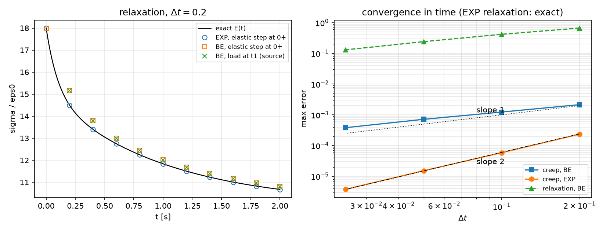
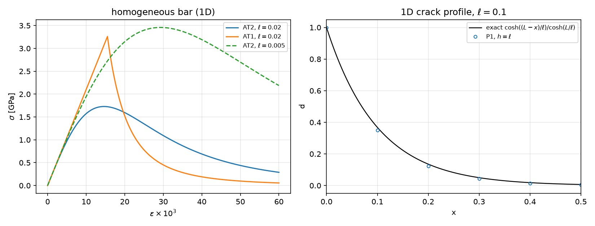
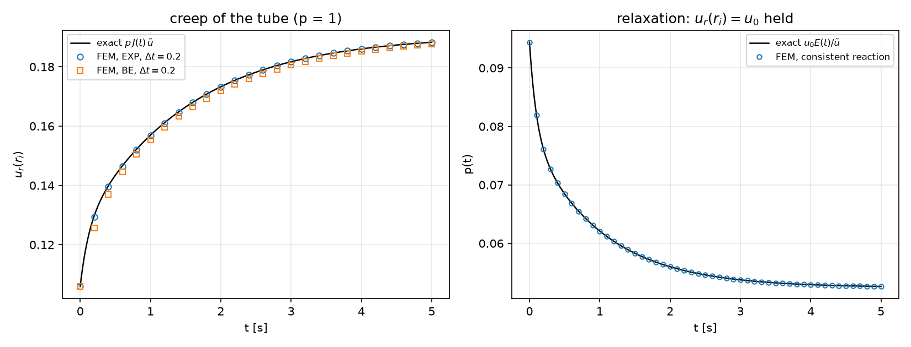
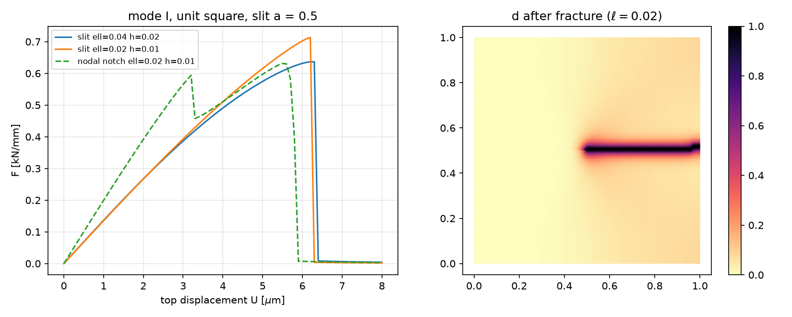

AI-based Materials and Process Simulation II
Week 05 — Viscoelasticity (Prony Series, Creep, Relaxation) · Phase-Field Fracture (AT2, Staggered Solution)
Process Systems Laboratory
Department of Chemical and Biomolecular Engineering, SeoulTech
Today
| Part | Topic | Time |
|---|---|---|
| Quiz on Week 4 (closed-AI) | 10 min | |
| A | Viscoelasticity — the generalized Maxwell model, relaxation and creep, time integration, the correspondence principle | 45 min |
| B | Phase-field fracture — from Griffith to AT2, the length scale \ell, irreversibility, the staggered scheme | 45 min |
| C | Code and verification — internal variables again, a creeping tube, a slit specimen, the original sources re-run | 50 min |
| D | LLM pitfalls · assignment | 20 min |
Lab notebook: W05_lab.ipynb · Assignment: W05_HW5.ipynb (due before Week 6)
Week 4 in one slide
- J2 plasticity: radial return, f=0 after the return, the consistent tangent (3–7 Newton iterations instead of 49–124).
- Internal variables at quadrature points, an explicit Newton loop that returns a convergence flag.
- Limit load: no equilibrium above p_{\rm lim}; displacement control and the consistent reaction.
Today: two more materials with memory. Viscoelasticity remembers the strain history (linear, rate-dependent); phase-field fracture remembers the largest driving force (nonlinear, irreversible). Both are verified against exact answers that do not come from the code.
Part A · Linear viscoelasticity
The generalized Maxwell model (Prony series)
A spring E_\infty in parallel with N Maxwell branches (spring E_i + dashpot, relaxation time \tau_i):
\sigma=E_\infty\varepsilon+\sum_i E_i(\varepsilon-\varepsilon^v_i),\qquad \dot\varepsilon^v_i=\frac{\varepsilon-\varepsilon^v_i}{\tau_i} \quad\Rightarrow\quad \sigma(t)=\int_0^tE(t-s)\,\dot\varepsilon(s)\,ds,\qquad E(t)=E_\infty+\sum_iE_ie^{-t/\tau_i}
- E_0=E_\infty+\sum E_i: instantaneous (glassy) modulus; E_\infty: long-time (rubbery) modulus.
- Our material: E_\infty=10, (E_1,\tau_1)=(5,1), (E_2,\tau_2)=(3,0.1) MPa, s; \nu=0.3 — E_0=18.
- In 3D: \mathbb C(t)=\mathbb C_\infty+\sum_i\mathbb C_ie^{-t/\tau_i}, one viscous strain tensor per branch (an internal variable, like \boldsymbol\varepsilon^p in Week 4).
Relaxation and creep
- Relaxation (strain \varepsilon_0 held): \sigma(t)=\varepsilon_0E(t) — exact, no computation.
- Creep (stress \sigma_0 held): \varepsilon(t)=\sigma_0J(t) with the creep compliance J. By Laplace transform (\hat f(s)=\int_0^\infty e^{-st}f\,dt):
\hat\sigma=s\hat E(s)\,\hat\varepsilon\quad\Rightarrow\quad \hat J(s)=\frac{1}{s^2\hat E(s)},\qquad s\hat E(s)=E_\infty+\sum_i\frac{E_is}{s+1/\tau_i}=\frac{N(s)}{D(s)}
J(t)= residues at s=0 and at the roots of N (the retardation times, different from the \tau_i). Checks: J(0)=1/E_0=0.055556, J(\infty)=1/E_\infty=0.1, J(10)=0.0999542 — and a 10^5-step integration agrees to 10^{-12}.
visco.Prony.relax(t), visco.Prony.creep(t): both exact, NumPy only.
One time step of a branch
\dot\varepsilon^v=(\varepsilon-\varepsilon^v)/\tau over [t_n,t_{n+1}], written in one form for two schemes:
\varepsilon^v_{n+1}=a\,\varepsilon^v_n+(1-b)\,\varepsilon_{n+1}+(b-a)\,\varepsilon_n,\qquad \sigma_{n+1}=\Big(E_\infty+\sum_ib_iE_i\Big)\varepsilon_{n+1}-\sum_iE_i\big(a_i\varepsilon^v_{i,n}+(b_i-a_i)\varepsilon_n\big)
| Scheme | a | b | Exact when |
|---|---|---|---|
| backward Euler (BE) | \dfrac{\tau}{\tau+\Delta t} | =a | never (first order) |
| exponential (EXP) | e^{-\Delta t/\tau} | \dfrac{(1-a)\tau}{\Delta t} | the strain is linear in time over the step |
| instantaneous step (\Delta t=0) | 1 | 1 | always: a jump is elastic, \sigma jumps by E_0\Delta\varepsilon |
- Effective stiffness E_\infty+\sum b_iE_i: constant for a constant \Delta t — one factorization for the whole run.
- A load applied at t=0 is a jump: take an elastic step at 0^+, then the time steps.
The schemes against the exact solutions

Relaxation: EXP is exact at every step (10^{-15}); BE is 3.7 % off at \Delta t=0.2 and converges slowly (0.73 % at \Delta t=0.025). Creep: BE first order (2.1\times10^{-3}\to3.8\times10^{-4}), EXP second order (2.3\times10^{-4}\to3.8\times10^{-6}).
The correspondence principle
If every branch has the same Poisson ratio, \mathbb C(t)=E(t)\,\hat{\mathbb C}(\nu): the viscoelastic problem is the elastic problem with E replaced by the hereditary integral. For loads that are constant in time from t=0:
\mathbf u(\mathbf x,t)=\underbrace{\mathbf u_{\rm el}(\mathbf x;\,E=1,\nu)}_{\text{one elastic solve}}\cdot\sigma_0J(t)\quad\text{(load control)},\qquad \text{reaction}(t)=\text{reaction}_{\rm el}(E=1)\cdot u_0E(t)\quad\text{(displacement control)}
- The thick tube under inner pressure (Weeks 3–4), plane strain: u_r(r_i,t)=p\,J(t)\,\tilde u, \tilde u= Lamé with E=1 =1.906667 (r_o/r_i=2).
- An exact time-dependent solution of a 2D problem — the test for the FE code. Only the constant-\nu case separates like this.
Part B · Phase-field fracture
From Griffith to a regularized crack
Griffith: a crack grows when the energy released per unit crack area reaches G_c. Total energy of a body with a crack set \Gamma: \mathcal E=\int_{\Omega\setminus\Gamma}\psi(\boldsymbol\varepsilon)\,dA+G_c\,|\Gamma|. Replace the sharp crack by a damage field d\in[0,1] of width \sim\ell (AT2):
\mathcal E_\ell(\mathbf u,d)=\int_\Omega g(d)\,\psi(\boldsymbol\varepsilon(\mathbf u))\,dA+\frac{G_c}{2}\int_\Omega\Big(\frac{d^2}{\ell}+\ell|\nabla d|^2\Big)dA,\qquad g(d)=(1-d)^2+k
- The second integral is a length in disguise: for the optimal profile d=e^{-|x|/\ell} across a straight crack it equals G_c per unit crack length.
- As \ell\to0 the minimizers converge to Griffith’s (Γ-convergence) — but \ell also sets a strength (next slide), so it is a material parameter.
- k\sim10^{-6} keeps the broken material from making the stiffness matrix singular.
Two exact tests of AT2
1D crack profile. d(0)=1, d'(L)=0, no load: d=\dfrac{\cosh((L-x)/\ell)}{\cosh(L/\ell)}, energy \dfrac{G_c}{2}\tanh\dfrac L\ell.
| h/\ell | \Gamma_h/\Gamma (P1) |
|---|---|
| 1 | 1.04083 |
| 0.5 | 1.01036 |
| 0.25 | 1.00260 |
| 0.125 | 1.00065 |
Second order in h/\ell — if a node sits on the crack.
Homogeneous bar. No gradient; \partial_d\mathcal E=0 gives d=\dfrac{E\varepsilon^2}{G_c/\ell+E\varepsilon^2}, \sigma=(1-d)^2E\varepsilon:
\sigma_{\max}=\frac{3\sqrt3}{16}\sqrt{\frac{EG_c}{\ell}}\quad\text{at}\quad\varepsilon=\sqrt{\frac{G_c}{3E\ell}},\ d=\tfrac14
E=210 GPa, G_c=2.7\times10^{-3} kN/mm, \ell=0.02 mm: \sigma_{\max}=1.7292 GPa. Smaller \ell → stronger. AT2 damages from the first strain (no elastic range); AT1 (w(d)=d) is elastic up to \sqrt{3G_cE/(8\ell)}=3.26 GPa.
The homogeneous response and the profile

Left: the strength of the regularized model scales as \ell^{-1/2}. Right: P1 with h=\ell already follows the exact profile (energy +4 %).
Irreversibility and the driving force
Cracks do not heal. Two common ways to impose \dot d\ge0:
- History field (Miehe 2010): replace \psi^+ in the d-equation by \mathcal H(t)=\max_{s\le t}\psi^+(s) — a quadrature-point variable. The d-problem is then linear: \int_\Omega\Big[\Big(\frac{G_c}{\ell}+2\mathcal H\Big)d\,q+G_c\ell\,\nabla d\cdot\nabla q\Big]dA=\int_\Omega2\mathcal H\,q\,dA
- Bound constraints d_n\le d\le1 (variational inequality, PETSc
vinewtonrsls) — needed for AT1; not used today.
Which energy drives the crack: \psi^+ (a split). Amor: \psi^+=\tfrac K2\langle\operatorname{tr}\boldsymbol\varepsilon\rangle_+^2+\mu\,\mathbf e:\mathbf e (all three normal components, plane strain); compression of the volume does not damage. “Hybrid” form: the \mathbf u-problem keeps g(d)\boldsymbol\sigma(\boldsymbol\varepsilon) (linear), only d sees the split.
Alternate minimization (staggered scheme)
For each displacement step U_n:
- solve \mathbf u with d fixed (linear, g(d) stiffness);
- \mathcal H=\max(\mathcal H_n,\psi^+(\boldsymbol\varepsilon(\mathbf u))) at the quadrature points;
- solve d with \mathcal H fixed (linear);
- repeat 1–3 until \max|d-d_{\rm prev}|<10^{-4}; then \mathcal H_n\leftarrow\mathcal H.
- Each sub-problem is convex — robust; the price is many iterations when the crack runs: 149–179 iterations in the step where our specimen breaks.
- A step that hits the iteration cap is not converged; the result belongs to no load. Count, report, refine the step.
Part C · Code and verification
The three modules
visco.py (NumPy) |
vtube.py (DOLFINx) |
pfield.py (DOLFINx) |
|---|---|---|
Prony(E_inf, [(E_i, tau_i)], nu) |
annulus_mesh (Weeks 3–4) |
profile_1d(Gc, ell, L, n) |
.relax(t), .creep(t) exact |
ViscoTube(msh, ft, mat, ri, ro, control, scheme) |
slit_mesh(h, a) — no Gmsh |
.coeffs(dt, scheme) → (a_i,b_i) |
.step(dt, load), dt = 0: elastic |
PhaseField(msh, E, nu, Gc, ell, split) |
point(mat, t, eps=… / sig=…) |
.ur_inner(), .pressure_from_reaction() |
.step(U) → (converged, iterations) |
lame_ur |
.force(), .crack_energy(band), .d_max() |
The structure of Week 4 again: internal variables at quadrature points, NumPy updates, forms with quadrature coefficients.
Viscoelasticity in code: a linear problem per step
Ceff.x.array[:] = np.tile((Cinf + sum(b * Ci for (a, b), Ci in zip(ab, Cb))).ravel(), nq) # constant for a fixed dt
hist.x.array[:] = sum((a * ev_i + (b - a) * e_old) @ Ci for ...).ravel() # history stress at the points
a = ufl.dot(ufl.dot(Ceff, eps4(du)), eps4(v)) * dx # assembled and factorized once per step size
L = ufl.dot(hist, eps4(v)) * dx - p * ufl.dot(n, v) * ds(INNER)
# after the solve: e_new at the points, then ev_i <- a ev_i + (1 - b) e_new + (b - a) e_old, e_old <- e_new- No Newton: the material is linear. The history enters only the right-hand side.
- The matrix is reassembled only when \Delta t changes (the elastic step at 0^+ has its own).
- Mandel 4-vectors and plane strain as in Week 4 — \sigma_{zz} is kept.
The creeping tube

| \Delta t | 0.2 | 0.1 | 0.05 |
|---|---|---|---|
| EXP: \max\lvert u_r-pJ\tilde u\rvert/u_r(\infty) | 2.3\times10^{-3} | 5.9\times10^{-4} | 1.5\times10^{-4} |
| BE | 2.1\times10^{-2} | 1.2\times10^{-2} | 7.2\times10^{-3} |
Relaxation (u_r(r_i) held, pressure from the consistent reaction) matches u_0E(t)/\tilde u to 3\times10^{-6} — the spatial error of the mesh.
Phase field in code
g = (1 - d)**2 + k
a_u = g * ufl.inner(sig(du), eps(v)) * dx # u-problem, d fixed (hybrid: isotropic g)
a_d = (Gc / ell + 2 * H) * dd * q * dx + Gc * ell * ufl.inner(ufl.grad(dd), ufl.grad(q)) * dx
L_d = 2 * H * q * dx # H: quadrature Function
for it in range(1, maxit + 1): # one load step
d_old = d.x.array.copy()
solve_u(); psi.interpolate(psi_plus_expr); H.x.array[:] = np.maximum(H_n, psi.x.array); solve_d()
if max_abs(d.x.array - d_old) < tol: break
H_n = H.x.array.copy(); return err < tol, it- Reaction: F=\int_\Omega g\,\sigma_{yy}\,dA — the virtual work with \mathbf w=(0,y) (Week 4’s consistent reaction, one line).
- Both matrices change every iteration (g(d) and \mathcal H): reassemble, refactorize.
A notch in the mesh, not in the damage
slit_mesh(h): a structured unit square, h along the crack line, y graded away from it; the nodes on y=0.5, x<0.5 are duplicated, so the slit has two free faces. No Gmsh: the same 4800 cells on every computer (h=0.01).
| slit in the mesh | d=1 on one line of nodes (no slit) | |
|---|---|---|
| crack energy at the start / G_ca | 0 | 1.04 (a profile, not a developed crack) |
| load–displacement | rises, one peak, breaks | a false first peak, a drop, a second peak |
| F_{\max} (\ell=0.02) | 0.7133 | 0.6312 (−11.5 %) |
| staggered iterations | all converged (\le178) | cap of 300 reached |
A one-node line of d=1 is weaker than the crack band the model forms itself; it re-damages under load.
The slit specimen

Mode I, E=210 GPa, \nu=0.3, G_c=2.7\times10^{-3} kN/mm, 80 steps to U=8\,\mum. The crack runs straight and unstably (one step); the faint background in the ligament is AT2’s diffuse damage.
Energy and the length scale
| \ell | h | cells | F_{\max} [kN/mm] | \Gamma/(G_ca) total | in the band \lvert y-\tfrac12\rvert<5\ell | max. iterations |
|---|---|---|---|---|---|---|
| 0.04 | 0.02 | 1200 | 0.6366 | 1.538 | 1.436 | 179 |
| 0.04 | 0.01 | 4800 | 0.6131 | 1.338 | 1.250 | 149 |
| 0.02 | 0.01 | 4800 | 0.7133 | 1.426 | 1.346 | 178 |
- The crack costs more than G_c a: the band of elements with d\approx1 (an effective toughness \approx G_c(1+h/2\ell) in the literature) — it falls with h at fixed \ell.
- 0.08–0.10\,G_ca lies outside the band: diffuse damage, larger for larger \ell.
- F_{\max} depends on \ell (strength) and on h (4 % here): report both, and a mesh study.
The original sources, re-run on 0.11
Viscoelasticity (generalized Maxwell, the same Prony data):
- Its “analytic” curve is the same backward-Euler algorithm with \Delta t=0.001 — a code-to-code check. (It is close to the exact J(10)=0.0999542; the header’s “0.067 %” is not what the code prints, 0.023 %.)
- Relaxation: the load is applied in the first time step, so \sigma(t_1)=1.5167 — neither E_0\varepsilon_0=1.8 at 0^+ nor the exact 1.4500 at t_1.
- “Long-time =E_\infty/(1-\nu^2)\cdot\varepsilon_0=1.0989”: the bar is free laterally (uniaxial stress) — the limit is E_\infty\varepsilon_0=1.0, which its own FEM (1.000046) reached.
Phase field (shear test):
- Mesh h=0.05 away from the notch tip with \ell=0.0075: the crack path is 7 cells per \ell too coarse.
- Notch “as an initial condition d=1”: the d-problem is linear with right-hand side 2\mathcal H — the initial value never enters (measured: d_{\max} 1 → 0 after the first solve).
- Staggered loop capped at 50 iterations and the cap reached at the peak step; “snap-back ✅” under displacement control is not observable.
Part D · LLM pitfalls · assignment
What goes wrong in history-dependent codes
| Pitfall | Measured symptom (this week) |
|---|---|
| “Analytic” reference computed with the same algorithm | agreement proves only that the code reproduces itself |
| Load applied at the first time step (no elastic step at 0^+) | relaxation starts at 1.5167 instead of 1.8; O(\Delta t) error that does not show up late |
| Long-time limit with the wrong reduced modulus (E/(1-\nu^2) for a free bar) | a 10 % “discrepancy” that is the reference’s |
| Mesh coarser than \ell along the crack path | the crack band and F_{\max} are mesh artifacts |
| Notch as an initial value of d / as one line of nodes | erased by the first solve / false first peak, F_{\max} −11.5 %, iterations at the cap |
| Staggered loop with a silent iteration cap | non-converged steps plotted as results: cap 50 (\ell=0.02, h=0.01) — same F_{\max} (the peak step converges), but 3 later steps stop at the cap and the crack energy is 1.483\,G_ca instead of 1.426 |
| All of \int\gamma(d) reported as crack energy | AT2’s diffuse damage (0.08–0.10\,G_ca here) counted as crack |
Prompting for a viscoelastic or phase-field model
- State the model completely: the Prony data and the time scheme; the phase-field model (AT1/AT2), g(d), the split, the irreversibility method.
- Ask for the exact tests first: relaxation =\varepsilon_0E(t), creep =\sigma_0J(t) (Laplace), correspondence for constant \nu; the 1D profile energy, the homogeneous \sigma_{\max}.
- Ask for an elastic step at 0^+ for loads applied at t=0.
- For fracture: h\le\ell/2 along the expected path, the notch in the mesh, a staggered loop that returns whether it converged and how many iterations it took.
- Report energies (elastic, crack, band) next to the force — they are the checks a force curve hides.
Assignment HW5 (due before Week 6)
| Q | Topic | Points |
|---|---|---|
| 1 | Time integration of a Maxwell branch, the creep compliance of the standard linear solid, AT2 strength and length scale (theory) | 20 |
| 2 | Viscoelasticity: the order of the time schemes in 2D, relaxation under displacement control, creep and recovery | 25 |
| 3 | Phase field: mesh and length-scale study of the slit specimen, the split in compression | 35 |
| 4 | Debugging an LLM-generated phase-field script | 20 |
Week 6 starts with a 10-minute quiz on today’s material (closed-AI).
Summary
| Concept | Key point | DOLFINx 0.11 |
|---|---|---|
| Prony series | E(t)=E_\infty+\sum E_ie^{-t/\tau_i}; creep J by Laplace | visco.Prony (NumPy) |
| Time integration | EXP exact for relaxation, order 2; BE order 1; elastic step at 0^+ | constant matrix per \Delta t |
| Correspondence | constant \nu: u(t)=u_{\rm el}(E=1)\,\sigma_0J(t) | exact 2D test |
| AT2 | \Gamma_\ell\to G_c per length; \sigma_{\max}=\frac{3\sqrt3}{16}\sqrt{EG_c/\ell} | pfield.profile_1d, homogeneous bar |
| Irreversibility | \mathcal H=\max\psi^+ (history) — linear d-problem | quadrature Function |
| Staggered scheme | alternate \mathbf u / d until converged; report iterations | PhaseField.step → flag |
Next week: dynamics (Newmark) and buckling (SLEPc eigenvalues).